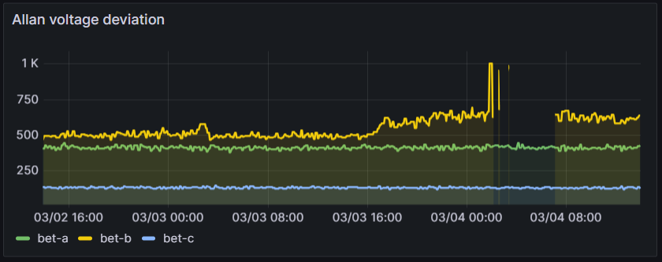

Weekly Highlights 20240228-20240306
2/27-3/1 - HNL WRE-C Down (GEO Bias Testing)
- 2/27 20:00 - HNL WRE-C down for GEO Bias Testing -- cycling in Maintenance Mode; ref LAD 709496332...
- 3/1 20:56 - HNL WRE-C GEO Bias Testing complete; restored to Normal at 3/1 21:56
2/28 - ZLA Fiber Cut
- 2/28 08:17 - Both ZLA CORs impacted for ~4 hours
by
Fiber Cut at Palmdale--ISR# 0228-0767; ref LIR 754558224; all lines cleared at 2/28 12:53 (~16550 seconds) after a 10 minute loopback confirmation

2/29 - CM1 to Primary for Monitoring
- 2/29 07:03 - GUS Switchover - S15 - BR1 to Backup / CM1 to Primary for further monitoring in Primary Mode
2/29 - SZ1 GUS Fault (C5 KPA Power Supply)
- 2/29 15:39 - SZ1 GUS Faulted from Backup with SEs 143 and 193 (C5 KPA Failure); ref LIR 755422424; Control Powered several times and restored to Backup at 2/29 17:58
- 3/1 04:35 - SZ1 GUS Faulted from Backup with SEs 143 and 193 (C5 KPA Failure); ref LIR 756276424; Control Powered and restored to Backup at 3/1 05:35
- 3/1 10:40 - SZ1 GUS Faulted from Backup with SEs 143 and 193 (C5 KPA Failure); still in Maintenance Mode waiting for engineer recommendation...
- 3/1 18:18 - SZ1 GUS Shutdown for RFU parts
replacement -- C5 KPA and LNA Power Supply
Airflow alarms; ref LAD
756305124; Control Powered and
restored to Backup at 3/1 19:15
- Site tech:
installed a bypass cable for the C5 Airflow sensor... HVAC contractor is coming to the site on Monday to look over the ducts & vents on the shelter. We’re going to see if he has any suggestions or possible fixes for this issue.
- Site tech:
2/29 - ZAB WRE-A Subframe
- 2/29 20:49 - ZAB WRE-A SE 728 Subframe Reasonability -- associated with RFI
3/2 - AP1 GUS Comm Loss of Redundancy
- 2/28 04:26 - AP1 Ring 1 ALT / Ring 2 PRI comms down hard; both lines cleared at 2/28 04:29 (~200 seconds)
- 3/2 19:18 - AP1 Ring 1 PRI / Ring 2 ALT comms down
hard;
ISR 0302-0481; ref LIR 756962424...Part due to arrive 3/5.
3/3 - ZLA WRE-A Fault
- 3/3 14:42 - ZLA WRE-A Faulted with SEs 30, 29, 52, 53, 59; ref LCM 714153732; Control Powered and restored to Normal at 3/3 15:31
3/4 - BET WRE-B Fault (Freq Std Failure)
- 2/27 07:12 - BET WRE-B to Maintenance and Control
Powered to address SE 30 Minor Alarm (flapping
since 2/26 16:20); ref LAD
753984924; Equipment Init failed
several times; after 3rd Control Power
restored to Normal at 2/27
12:41
- Starting around 2/26 15:40, the Allan Voltage Deviation for the Freq Std started elevating and was elevated during equipment init failures; a similar elevation occurred on 2/23-24 coincident with SE 30 Minor Alarm flapping -- that elevation resolved with no action taken by the Operator

- 3/4 01:35 - BET WRE-B Faulted with SE 29; Control Powered, but had issues restoring due to Freq Std / Rcvr Initialization Faults; ref LCM 757800624

- 3/4 15:15 - BET WRE-B Control Powered -- Faulted from Verification
- 3/4 16:22 - BET WRE-B Control Powered -- Faulted again from Verification
- 3/4 16:55 - BET WRE-B Control Powered OFF until site technician can investigate; ref LIR 757944824
3/5 - ZLA COR-B Router Reset
- 3/3 08:18 - MMX Ring 2 comms down hard; line cleared 3/5 19:41 after ZLA COR-B Reset (~213807 seconds)
- 3/5 07:55 - HNL Ring 2 ALT comms down hard; line cleared 3/5 19:41 after ZLA COR-B Reset (~42395 seconds)
- 3/5 13:00 - BIL Ring 1 PRI / Ring 2 ALT comms down
hard...
- Ring 1 PRI line cleared at 3/5 13:11 (~671 seconds)
- Ring 2 ALT line to ZLA still down... recommend bouncing the ZLA COR-B due to possible bad state; line cleared 3/5 19:41 after ZLA COR-B Reset (~24107 seconds)
- 3/5 17:21 - BIL ACS-A Reset; line cleared at 3/5 17:48 (~753 seconds total)
- 3/5 19:34 - ZLA COR-B Reset to address bad state
-- all down comms associated with ZLA COR-B
cleared including MMX
- 3/5 19:37 - With ZLA COR-B Reset, BR1 and BR2 GUSes and ZAN WRS briefly went No Data Reported
Various Comm Impacts
* Does not include single-line impacts <60 seconds which do not cause an outage
BRW Comm Events
- 2/28 01:02 - BRW Ring 1 / Ring 2 comms down hard -- OFFLINE; both lines cleared at 2/28 01:04 (~120 seconds)
- 2/29 01:08 - BRW Ring 1 / Ring 2 comms down hard for ~126 seconds
- 3/1 20:05 - BRW Ring 1 / Ring 2 comms down hard; lines cleared at 3/1 20:07 (~90 seconds)
CM1 Comm Events
- 3/1 20:18 - CM1 Ring 2 PRI comms flapping; last event cleared at 3/1 20:29 (~76 seconds)
- 3/2 20:50 - CM1 Ring 1 PRI / Ring 2 ALT comms took a ~20 second hit
- 3/3 05:14 - CM1 Ring 2 PRI comms flapping; last event cleared at 3/3 05:23 (~124 seconds)
- 3/4 23:45 - CM1 Ring 1 comms start flapping; last event cleared at 3/5 02:16 (~1153 seconds total)
- 3/5 04:10 - CM1 Ring 1 comms start flapping; last event cleared at 3/5 05:41 (~499 seconds total)
- 3/6 18:18 - CM1 Ring 1 comms start flapping...
YFB Comm Events
- 2/28 18:02 - YFB Ring 2 comms down hard; line cleared at 2/28 18:11 (~548 seconds)
- 2/28 19:03 - YFB Ring 1 comms down hard; line cleared at 2/28 19:09 (~374 seconds)
- 3/1 18:03 - YFB Ring 2 comms down hard; line cleared at 3/1 18:09 (~365 seconds)
- 3/2 18:04 - YFB Ring 2 comms down hard; line cleared at 3/2 18:07 (~134 seconds)
- 3/6 17:41 - YFB Ring 2 comms down hard; line cleared at 3/6 17:44 (~180 seconds)
Mexico Sites
- 2/28 17:01 - MSD Ring 1 comms down hard -- OFFLINE; line cleared at 2/28 17:01 (~1042 seconds)
- 3/1 23:01 - MSD Ring 1 comms down hard; line cleared at 3/2 05:20 (~22727 seconds)
- 3/4 08:05 - MMD Ring 1 comms down hard -- OFFLINE; line cleared at 3/4 08:41 (~2165 seconds)
- 3/4 12:43 - MMD Ring 1 comms down hard -- OFFLINE; line cleared at 3/4 12:49 (~365 seconds)
- 3/4 23:29 - MTP Ring 1 comms down hard -- OFFLINE; line cleared at 3/4 23:32 (~168 seconds)
Other Sites
- 2/29 01:03 - OTZ Ring 1 / Ring 2 comms flapping; last event cleared at 2/29 01:11 (~430 seconds total)
- 2/28 12:59 - YQX Ring 1 comms down hard for ~83 seconds
- 2/28 19:08 - YYR Ring 1 comms flapping; last event cleared at 2/28 19:14 (~278 seconds total)
- 2/29 01:03 - OTZ Ring 1 / Ring 2 comms flapping; last event cleared at 2/29 01:11 (~430 seconds total)
- 2/29 12:08 - YWG Ring 1 PRI / Ring 2 ALT and ZNY Ring 1 PRI / Ring 2 ALT comms flapping for ~30 seconds
- 2/29 14:01 - YWG Ring 1 PRI / Ring 2 ALT and ZNY Ring 1 PRI / Ring 2 ALT comms flapping for ~30 seconds
- 3/1 19:08 - YYR Ring 1 comms down hard; line cleared at 3/1 19:14 (~327 seconds)
- 3/3 19:08 - YYR Ring 1 comms down hard; line cleared at 3/3 19:11 (~150 seconds)
- 3/4 20:26 - CDB Ring 1 comms down hard; line cleared at 3/4 20:33 (~246 seconds)
- 3/6 01:17 - CDB Ring 2 comms flapping; last event cleared at 3/6 02:45 (~3351 seconds total)
- 3/6 10:03 - CDB Ring 2 comms flapping; last event cleared at 3/6 13:11 (~2537 seconds total)
List of current offline WREs
List of current offline WREs -- ref WAAS Status Monitor
- BET WRE-B - 3/4-... - Freq Std Failure
All Depot shipments to Mexico are halted until the customs process can be finalized
- MMX WRE-B - 10/2-... - PCU-B failed; need replacement but first need Maintainer Laptops for configuration
- MMX WRE-A - 9/27-... - PCU-A failed; need replacement but first need Maintainer Laptops for configuration
- MTP WRE-B - 7/21-... - PCU-B failing over and over again; input power tested good; disconnected power for other LRUs in WRE-B until PCU-B can be replaced; PCU-B has apparently been stable since 7/25 00:16 (no further power cycles on PCU)
5/11/23-... - MX Ring 2 Satcom Upgrade
MX WAAS Sites comm upgrades in progress:
- 2/15 - MMX Ring 2 successfully connected through Tijuana to ZLA COR-B!
- 11/2 - FTI has initiated coordination with Tijuana to install and test direct connection to Frequentis -- MMD Test on 12/6
- 10/27 - Frequentis has delivered to Tijuana, needs to be connected to FTI delivery
Further work / new cables needed at each WRS site to complete Ring 2 connection upgrades
FTI-Harris coordinating with SENEAM at TJX to complete end-to-end testing

Major Events


Comm Events